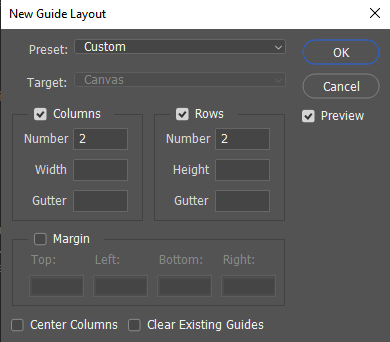
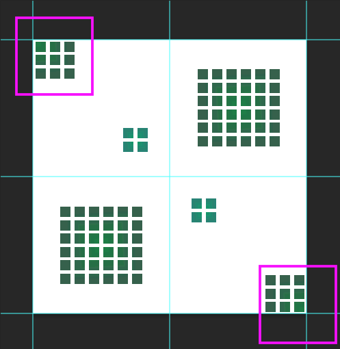

Gridlock
For the gridlock background, my goal was to create linear pathways outside of a traditional square grid. Repetition was key but, most importantly was achieving seamlessness. Below are the steps we took in order to create this background!
-
Begin by creating a photoshop document that measures 400 pixels by 400 pixels
-
You'll want to add guides to create quadrants to have everything lined up for repetition.
Click View > New Guide Layout

-
The guides have setup 4 quadrants. Using the Shape Tool (U) begin assembling a grid of 6 x 6 squares in the top left quadrant with each square measuring about 15 pixels.
What you end up with should look like a square made up of smaller, tinier squares
-
From here, we'll want to create a smart object that will house all of our squares into one clean editable, non-destructive layer. To do this, group all of the squares together by selecting their individual layers and placing them in a folder using Ctrl+G. You can now right-click and select "Create Smart Object"
-
With the smart object selected, select the fx icon and add a Gradient Overlay. This will open the fx tab where you can select and manipulate the gradient. There's a preset gradient that we'll be using to recreate Gridlock:
- The blend mode will be soft light
- Select preset Green 24 change the gradient style to radial
- Check the Reverse box
- Change the style to Radial
-
We'll flesh out some of the empty space with smaller clusters. we'll take the same 36-cluster and duplicate it to where the corner just peeks out with 6 squares from the top left corner and the bottom right corner.

-
Lastly, we just need to add the background. For this, create a solid color from the adjustments menu and enter the hexcode #305b40. From here we can export as a .PNG and add it to our background in the styles!